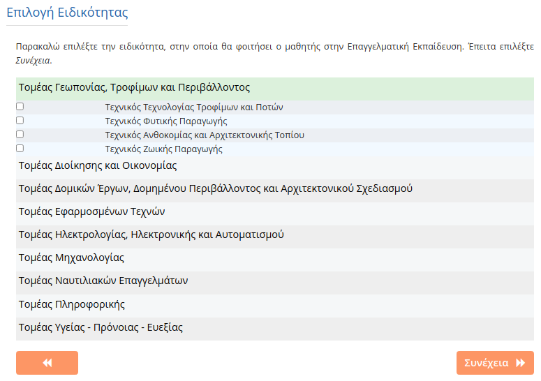
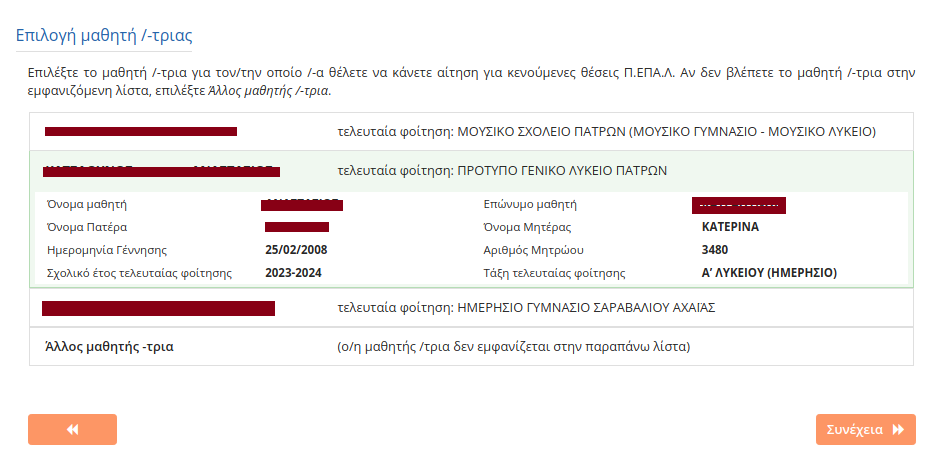

Οι γονείς-κηδεμόνες των ανήλικων μαθητών/-τριών ή οι ίδιοι οι ενήλικοι/-κες μαθητές/-τριες που επιθυμούν να εγγραφούν, να ανανεώσουν την εγγραφή τους ή να μετεγγραφούν σε οποιαδήποτε τάξη Ημερήσιων και Εσπερινών ΓΕ.Λ., ΕΠΑ.Λ. ή Π.ΕΠΑ.Λ. για το σχολικό έτος 2024-2025, υποβάλλουν Ηλεκτρονική Αίτηση Εγγραφής.
Η αίτηση υποβάλλεται μέσω της εφαρμογής e-εγγραφές στην ηλεκτρονική διεύθυνση: https://e-eggrafes.minedu.gov.gr, συμπληρώνοντας όλα τα απαραίτητα στοιχεία.
Απαραίτητοι Κωδικοί
Για την είσοδο στην εφαρμογή e-εγγραφές, είναι απαραίτητοι οι κωδικοί ΓΓΠΣΨΔ (TaxisNet).
α. Για ανήλικους μαθητές: Χρησιμοποιούνται οι κωδικοί TaxisNet του γονέα/κηδεμόνα που έχει καταχωριστεί στο ΠΣ myschool ως «κηδεμόνας e-Eggrafes», βάσει της σχετικής Υπεύθυνης Δήλωσης που έχει ήδη υποβληθεί στο σχολείο τελευταίας φοίτησης.
β. Για ενήλικους μαθητές: Εισέρχονται στην εφαρμογή οι ίδιοι/-ες.
Στην περίπτωση κατά την οποία οι αιτούντες/-σες δε διαθέτουν κωδικούς ΓΓΠΣΨΔ (TaxisNet), οφείλουν να προβούν σε όλες τις απαραίτητες ενέργειες, προκειμένου να τους αποκτήσουν έγκαιρα.
Ο χρήστης επισκέπτεται την ηλεκτρονική διεύθυνση https://e-eggrafes.minedu.gov.gr. Η αρχική σελίδα της εφαρμογής εμφανίζει τρεις ενημερωτικές ζώνες.
Ζώνη 1: Οι χρήστες βλέπουν τις ανακοινώσεις που αφορούν τα στάδια της εφαρμογής για το διάστημα που αυτή είναι ενεργή.
Ζώνη 2: Παρέχονται χρήσιμοι σύνδεσμοι για οδηγίες χρήσης, νομοθεσία, προστασία δεδομένων, συχνές ερωτήσεις και χρήσιμα έγγραφα (όπως υπεύθυνες δηλώσεις).
Ζώνη 3: Οι χρήστες ενημερώνονται για τα στοιχεία επικοινωνίας με το helpdesk των ΓΕΛ και των ΕΠΑΛ-ΠΕΠΑΛ.
Στη συνέχεια ο χρήστης πατάει το κουμπί «Είσοδος μέσω TaxisNet». Αφού πληκτρολογήσει τους προσωπικούς του κωδικούς ΓΓΠΣΨΔ (TaxisNet) και πατήσει «Σύνδεση», καλείται να επιλέξει «Έγκριση» και «Αποστολή», ώστε να συνδεθεί στην εφαρμογή.
Όποιος/α επιθυμεί, μπορεί να εγγραφεί στο ψηφιακό κανάλι μέσω viber του Υ.ΠΑΙ.Θ.Α.Α (https://vb.me/59407a), ώστε να έχει άμεση και έγκυρη ενημέρωση για την ηλεκτρονική αίτηση εγγραφής.
Μετά την ταυτοποίηση από το σύστημα εμφανίζονται προ-συμπληρωμένα τα στοιχεία του χρήστη (Όνομα, Επώνυμο, Πατρώνυμο, Μητρώνυμο). Ο χρήστης επιλέγει «Συνέχεια» για να προχωρήσει στην αίτηση.
Υποβολή Αίτησης για Πολλαπλούς Μαθητές
Ένας χρήστης έχει δικαίωμα να υποβάλει αίτηση για τον εαυτό του και για μέχρι τέσσερις (4) μαθητές/-τριες που βρίσκονται στην επιμέλειά του. Σε περίπτωση που ο χρήστης επιθυμεί να υποβάλει αίτηση για περισσότερους από 4 μαθητές (π.χ. έχει περισσότερα από 4 παιδιά, είναι Εκπρόσωπος Δομής Φιλοξενίας Ασυνόδευτων Ανηλίκων, είναι Διευθυντής/-ντρια που εγγράφει πρόσφυγες/μετανάστες), θα πρέπει να αποστείλει, μέσω ηλεκτρονικού ταχυδρομείου (email) σχετική υπεύθυνη δήλωση στις παρακάτω διευθύνσεις:
Για ΕΠΑΛ/ΠΕΠΑΛ στη διεύθυνση: e-epal@minedu.gov.gr
Για ΓΕΛ στη διεύθυνση: egel@minedu.gov.gr
Μετά από αυτή τη διαδικασία, το Υ.ΠΑΙ.Θ.Α. θα επεξεργαστεί το αίτημα και θα πιστοποιήσει τον χρήστη για να προχωρήσει. Ο χρήστης θα δει στην οθόνη του την επιλογή «Έχω εξουσιοδοτηθεί από το ΥΠΑΙΘ...» τσεκαρισμένη.
Στο επόμενο βήμα ο χρήστης μπορεί να ενημερωθεί για το περιεχόμενο της ισχύουσας νομοθεσίας και να βρει χρήσιμες πληροφορίες και οδηγίες για ΓΕ.Λ. και ΕΠΑ.Λ./Π.ΕΠΑ.Λ..
Η Ηλεκτρονική Αίτηση Εγγραφής υπέχει θέση Υπεύθυνης Δήλωσης του ν. 1599/1986 (Α΄ 75). Ο χρήστης δηλώνει υπεύθυνα την ορθότητα των προσωπικών στοιχείων που καταχωρίζει.
Για να συνεχίσει, πρέπει να επιλέξει το πλαίσιο ελέγχου δίπλα στο «Διάβασα και αποδέχομαι τους παραπάνω όρους» και έπειτα να πατήσει το κουμπί «Συνέχεια».
Σε αυτό το σημείο ο χρήστης επιλέγει τον τύπο σχολείου που επιθυμεί να φοιτήσει ο/η μαθητής/-ήτρια, επιλέγοντας «Γενικό Λύκειο» (ΓΕ.Λ.), «Επαγγελματικό Λύκειο» (ΕΠΑ.Λ.) ή «Πρότυπο Επαγγελματικό Λύκειο» (Π.ΕΠΑ.Λ.).
Επισήμανση: Για φοίτηση σε Πειραματικό / Πρότυπο / Μουσικό / Καλλιτεχνικό σχολείο ή σχολείο Διαπολιτισμικής Εκπαίδευσης, πατήστε Γενικό Λύκειο (ΓΕΛ) σε αυτή την οθόνη.
Βήμα 1ο: Επιλογή Τάξης
Ο χρήστης επιλέγει την τάξη που πρόκειται να φοιτήσει ο/η μαθητής/-ήτρια στην Επαγγελματική Εκπαίδευση και έπειτα επιλέγει «Συνέχεια».
Βήμα 2ο: Επιλογή Τομέα ή Ειδικότητας (Μόνο για Β' και Γ' τάξη)
Αυτό το βήμα αφορά μόνο μαθητές/-τριες που στο προηγούμενο βήμα επέλεξαν Β΄ ή Γ΄ τάξη. Ο χρήστης καλείται να επιλέξει τον τομέα (για Β' τάξη) ή την ειδικότητα (για Γ' τάξη) που θέλει να παρακολουθήσει ο/η μαθητής/-ήτρια.

Βήμα 3ο: Επιλογή Σχολείου
Ο χρήστης επιλέγει Περιφερειακή Διεύθυνση Εκπαίδευσης και στη συνέχεια τα σχολεία προτίμησης. Έχει δικαίωμα να επιλέξει στην πρώτη περίοδο εγγραφών από ένα (1) έως και τρία (3) σχολεία, που μπορούν να ανήκουν στην ίδια ή σε διαφορετικές Περιφερειακές Διευθύνσεις. Για μαθητές/-τριες της Β΄ και Γ΄ ΕΠΑ.Λ. εμφανίζονται μόνο τα σχολεία στα οποία λειτουργεί ο Τομέας ή η Ειδικότητα που επιλέχθηκαν.
Βήμα 4ο: Σειρά Προτίμησης
Σε περίπτωση που επιλέχθηκαν περισσότερα από ένα σχολεία, ο χρήστης καθορίζει την επιθυμητή σειρά προτίμησης πατώντας τα αντίστοιχα βέλη. Αν στις επιλογές περιλαμβάνεται και προτίμηση για Εσπερινό ΕΠΑ.Λ., καλείται να διαβάσει και να αποδεχτεί τις προϋποθέσεις εγγραφής τσεκάροντας το σχετικό πεδίο.
Βήμα 5ο: Συμπλήρωση Στοιχείων Μαθητή
Αναλυτικά οι περιπτώσεις συμπλήρωσης:
Στοιχεία Φοίτησης Μαθητή:
Περίπτωση 1 (Φοίτηση 2023-24): Συμπληρώνεται το σχολικό έτος και το σχολείο τελευταίας φοίτησης.
Περίπτωση 2 (Φοίτηση 2013-14 έως 2022-23): Συμπληρώνεται έτος, σχολείο και "Αποτέλεσμα φοίτησης" (επαρκής/ανεπαρκής).
Περίπτωση 3 (Φοίτηση πριν το 2013-14): Συμπληρώνεται έτος, σχολείο, "Τάξη" και "Αποτέλεσμα φοίτησης".
Περίπτωση 4 (Ειδικές περιπτώσεις σχολείων): Υπάρχουν ειδικές επιλογές για μαθητές από: Ελληνικό Σχολείο Εξωτερικού, Ξένο Σχολείο Εξωτερικού (όπου συμπληρώνεται και ο αρ. πρωτ. βεβαίωσης αντιστοίχισης ΔΔΕ/ΕΟΠΠΕΠ), Σχολείο Δεύτερης Ευκαιρίας (ΣΔΕ), Αλλοδαποί με ελλιπή δικαιολογητικά, Παλαιού τύπου καταργημένα Τεχνικά σχολεία, Καταργημένα Γυμνάσια, και απόφοιτοι ΕΠΑ.Σ. Μαθητείας Δ.ΥΠ.Α..
Προσωπικά Στοιχεία Μαθητή:
Περίπτωση Α' (Φοίτηση από 2013-14 και μετά): Ο χρήστης εισάγει τον «Αριθμό Μητρώου Μαθητή» και την «Ημερομηνία γέννησης» και πατάει "Ταυτοποίηση Μαθητή" για αυτόματη ανάκτηση στοιχείων. Σε περίπτωση αποτυχίας, εμφανίζονται μηνύματα λάθους:
Αποτυχία Ταυτοποίησης Κηδεμόνα: Συμβαίνει όταν ο κηδεμόνας που κάνει την αίτηση δεν είναι ο ίδιος που έχει δηλωθεί στο myschool. Ο χρήστης πρέπει να επικοινωνήσει με το σχολείο για διόρθωση.
Αποτυχία Ταυτοποίησης Μαθητή: Συμβαίνει όταν τα στοιχεία (Αρ. Μητρώου, σχολείο, ημ. γέννησης) είναι λανθασμένα. Ο χρήστης πρέπει να τα ελέγξει ή να επικοινωνήσει με το σχολείο.
Περίπτωση Β' (Φοίτηση πριν το 2013-14): Ο χρήστης συμπληρώνει χειροκίνητα όλα τα στοιχεία (Φύλο, Όνομα, Επώνυμο, Πατρώνυμο, Μητρώνυμο, Ημερομηνία Γέννησης).
Στοιχεία Επικοινωνίας: Συμπληρώνεται από ποιον γίνεται η αίτηση (Γονέας/Κηδεμόνας, Μαθητής, Εξουσιοδοτημένο Πρόσωπο) και το κινητό τηλέφωνο. Για φοίτηση πριν το 2013-14 ή από σχολεία εξωτερικού, συμπληρώνεται και η διεύθυνση κατοικίας.
Βήμα 6ο: Προεπισκόπηση και Υποβολή
Εμφανίζεται η προεπισκόπηση της αίτησης. Ο χρήστης πρέπει να τσεκάρει τα κουτάκια της Υπεύθυνης Δήλωσης που τον/την αφορούν:
Συμπληρωματικά στοιχεία - Ειδική Εξεταστική του Ν.4610/2019
Για τους/τις μαθητές/-ήτριες, οι οποίοι/ες εμπίπτουν στον ν.4610/2019, θα εμφανιστεί μια επιπλέον επιλογή με τίτλο «Ειδική Εξεταστική του Ν. 4610/2019», στην οποία θα πρέπει να επιβεβαιώσουν ότι ολοκλήρωσαν επιτυχώς τις εξετάσεις και να πληκτρολογήσουν τον Αριθμό Πρωτοκόλλου της Βεβαίωσης Επιτυχίας τους.
"Διάβασα τις παραγράφους α,β,γ,δ και Συμφωνώ" (ότι είναι νόμιμος κηδεμόνας, αποδέχεται την ηλεκτρονική ενημέρωση, ότι ο μαθητής δεν φοιτά σε άλλο σχολείο).
"Διάβασα την παράγραφο ε1 και Συμφωνώ" (ότι ο μαθητής δεν κατέχει απολυτήριο Λυκείου και θέλει να αποκτήσει Απολυτήριο και Πτυχίο Ειδικότητας).
"Διάβασα την παράγραφο ε2 και Συμφωνώ" (ότι ο μαθητής κατέχει απολυτήριο Λυκείου και θέλει να αποκτήσει μόνο Πτυχίο Ειδικότητας).
Τέλος, πατάει «Υποβολή». Μετά την επιτυχή υποβολή, εμφανίζεται ενημερωτικό μήνυμα.
Βήμα 1ο: Επιλογή Τάξης
Η διαδικασία είναι ίδια με το αντίστοιχο βήμα των ΕΠΑ.Λ.
Βήμα 2ο: Επιλογή Τομέα ή Ειδικότητας
Η διαδικασία είναι ίδια με το αντίστοιχο βήμα των ΕΠΑ.Λ.
Βήμα 3ο: Επιλογή Σχολείου
Ο χρήστης επιλέγει ένα (1) Πρότυπο Επαγγελματικό Λύκειο. Έχει τη δυνατότητα, εάν το επιθυμεί, να δηλώσει επιπλέον μέχρι δύο (2) ΕΠΑ.Λ. στα οποία θα μπορούσε να φοιτήσει σε περίπτωση που δεν επιλεγεί στο Π.ΕΠΑ.Λ..
Βήμα 4ο: Σειρά Προτίμησης
Το Πρότυπο ΕΠΑ.Λ. αποτελεί αυτόματα την πρώτη προτίμηση και η σειρά του δεν μπορεί να αλλάξει. Ο χρήστης μπορεί να αλλάξει τη σειρά προτίμησης μόνο για τα ΕΠΑ.Λ. που έχει επιπλέον επιλέξει.
Βήμα 5ο: Συμπλήρωση Στοιχείων Μαθητή
Η διαδικασία είναι ίδια με το Βήμα 5ο της αίτησης για τα ΕΠΑ.Λ. (δείτε την ενότητα 5Α).
Βήμα 6ο: Προεπισκόπηση και Υποβολή
Η διαδικασία είναι ίδια με το Βήμα 6ο της αίτησης για τα ΕΠΑ.Λ. (δείτε την ενότητα 5Α).
5Β2. Υποβολή Αίτησης για Κενούμενες Θέσεις Π.ΕΠΑ.Λ. (Περίοδος Σεπτεμβρίου)
Με την έναρξη του νέου σχολικού έτους (1η Σεπτεμβρίου) και πριν την έναρξη των μαθημάτων, δίνεται η δυνατότητα υποβολής αίτησης για θέσεις που έμειναν κενές στα Π.ΕΠΑ.Λ.
Αρχικά ο χρήστης, αφού επιλέξει να κάνει αίτηση σε Π.ΕΠΑ.Λ., οδηγείται στη σελίδα «Επιλογής μαθητή/-τριας». Στην οθόνη αυτή εμφανίζεται μια λίστα με τους μαθητές για τους οποίους έχει γίνει ήδη αίτηση από τον συγκεκριμένο κηδεμόνα. Ο χρήστης επιλέγει τον μαθητή που τον ενδιαφέρει.

Επισημάνσεις
Σε περίπτωση που για τον μαθητή υπάρχει ήδη ενεργή αίτηση από προηγούμενη περίοδο (π.χ. δεν κατανεμήθηκε κάπου), θα πρέπει πρώτα να διαγραφεί. Το σύστημα εμφανίζει σχετικό μήνυμα και ένα πλαίσιο ελέγχου. Επιλέγοντάς το και πατώντας "Συνέχεια", η παλιά αίτηση διαγράφεται και ο χρήστης προχωρά στη νέα.
Για να έχει δικαίωμα νέας αίτησης ένας μαθητής που είναι ήδη κατανεμημένος και επιβεβαιωμένος σε άλλο σχολείο, θα πρέπει πρώτα ο Διευθυντής του σχολείου αυτού να του δώσει το δικαίωμα για νέα αίτηση. Αλλιώς, εμφανίζεται μήνυμα σφάλματος.
Βήμα 1ο: Επιλογή τύπου ΓΕ.Λ. και τάξης
Αρχικά ο χρήστης επιλέγει μεταξύ Ημερήσιου και Εσπερινού ΓΕ.Λ. και στη συνέχεια δηλώνει την τάξη φοίτησης (Α΄, Β΄, Γ΄ τάξη).
Βήμα 2ο: Επιλογή Ομάδας Προσανατολισμού (για Β' και Γ' Λυκείου)
Για τη Β' Τάξη, ο χρήστης οφείλει να επιλέξει την Ομάδα Προσανατολισμού την οποία θα παρακολουθήσει ο/η μαθητής/-ήτρια. Για τη Γ' Τάξη, ο χρήστης οφείλει να επιλέξει την ομάδα προσανατολισμού, συνοδευόμενη από το μάθημα επιλογής που ενδεχομένως προσφέρει.
Βήμα 3ο: Συμπλήρωση Στοιχείων Μαθητή
Η διαδικασία είναι παρόμοια με των ΕΠΑ.Λ. Ειδική περίπτωση αποτελεί η τοποθέτηση σε σχολείο άλλης Δ/νσης Δ/θμιας Εκπ/σης (μετεγγραφή) λόγω αλλαγής διεύθυνσης κατοικίας. Ο χρήστης πρέπει να το δηλώσει τσεκάροντας το σχετικό πεδίο, εφόσον η αλλαγή έχει ήδη καταχωριστεί στο myschool από το σχολείο τελευταίας φοίτησης.
Βήμα 4ο: Επιλογή Δεύτερης Ξένης Γλώσσας (για Α' Λυκείου)
Σε περίπτωση αίτησης για την Α΄ Λυκείου, και εφόσον δεν είναι ήδη καταχωρισμένη η 2η ξένη γλώσσα στο myschool, ο χρήστης καλείται να επιλέξει μεταξύ Γαλλικών και Γερμανικών. Έχει δικαίωμα να δηλώσει μία ή και τις δύο γλώσσες με σειρά προτίμησης.
Βήμα 5ο: Προεπισκόπηση και Υποβολή
Εμφανίζεται η προεπισκόπηση της αίτησης. Ο χρήστης πρέπει να αποδεχτεί τους όρους της Υπεύθυνης Δήλωσης και να πατήσει «Υποβολή». Μετά την επιτυχή υποβολή, εμφανίζεται ενημερωτικό μήνυμα.
Εφόσον η Ηλεκτρονική Αίτηση Εγγραφής υποβλήθηκε με επιτυχία, είναι αποθηκευμένη στην εφαρμογή και μπορεί να εμφανιστεί επιλέγοντας το κουμπί «Οι αιτήσεις μου». Πατώντας στο όνομα του μαθητή, ο χρήστης βλέπει την αίτηση και τις παρακάτω λειτουργίες:
Διαγραφή Αίτησης: Η εφαρμογή παρέχει τη δυνατότητα διαγραφής της Ηλεκτρονικής Αίτησης Εγγραφής. Η δυνατότητα αυτή υπάρχει μόνο την περίοδο κατά την οποία είναι ενεργή η εφαρμογή.
Επεξεργασία Αίτησης: Δίδεται η δυνατότητα στον αιτούμενο να διορθώσει την αίτησή του, ακολουθώντας διαδοχικά τα βήματα που προαναφέρθηκαν.
Υποβολή Δικαιολογητικών: Ο χρήστης μπορεί να μεταφορτώσει τα απαραίτητα δικαιολογητικά που θα πρέπει να συνοδεύουν την αίτησή του (αποδεκτοί τύποι: pdf, zip, rar, μέγεθος έως 4Mb). Η δυνατότητα αυτή ενεργοποιείται μετά την κατανομή στο σχολείο φοίτησης.
Εκτύπωση Αίτησης: Γίνεται λήψη της Ηλεκτρονικής Αίτησης Εγγραφής σε μορφή pdf. Στο αρχείο αυτό φαίνεται ο αριθμός της Ηλεκτρονικής Αίτησης Εγγραφής και η ώρα που υποβλήθηκε.
Ειδοποιήσεις Κατάστασης Δικαιολογητικών
Στη σελίδα των δικαιολογητικών θα υπάρχει μια ειδοποίηση που θα αφορά την πορεία ελέγχου από τον/τη Διευθυντή/-ύντρια του σχολείου:
Όταν δεν έχουν ακόμα ελεγχθεί: "Τα δικαιολογητικά δεν έχουν ακόμα ελεγχθεί από την αρμόδια Σχολική Μονάδα"
Όταν υπάρχουν παραλείψεις: "Τα δικαιολογητικά έχουν ελεγχθεί από την αρμόδια Σχολική Μονάδα και υπάρχουν παραλείψεις / εκκρεμότητες. Επικοινωνήστε άμεσα με τη σχολική μονάδα."
Όταν ο έλεγχος είναι πλήρης: "Τα δικαιολογητικά έχουν ελεγχθεί από την αρμόδια Σχολική Μονάδα και δεν υπάρχουν παραλείψεις ή εκκρεμότητες"
Στην τελευταία περίπτωση ο χρήστης δεν θα έχει πλέον δικαίωμα υποβολής δικαιολογητικών.
Οι μαθητές/-ήτριες ενημερώνονται για το αποτέλεσμα του αιτήματός τους μέσω της ηλεκτρονικής πλατφόρμας e-eggrafes.minedu.gov.gr. Αφού συνδεθούν, επιλέγουν «Οι αιτήσεις μου» και πατούν πάνω στο όνομα του/της μαθητή/-ήτριας για να δουν το αποτέλεσμα.
Σε περίπτωση επιτυχούς κατανομής, το μήνυμα αναφέρει: «Η αίτησή σας ικανοποιήθηκε. Έχετε κατανεμηθεί για να εγγραφείτε στο [όνομα_σχολείου]». Παρατίθενται τα στοιχεία επικοινωνίας του σχολείου και ο/η ενδιαφερόμενος/η καλείται να επικοινωνήσει ΑΜΕΣΑ με το σχολείο για την ολοκλήρωση της εγγραφής.
Επισήμανση για ΕΠΑ.Λ.: «Σας επισημαίνουμε ότι σε περίπτωση που οι αιτήσεις ξεπερνούν τον αριθμό μαθητών/τριών που μπορεί να εξυπηρετήσει η σχολική μονάδα, θα πραγματοποιηθεί δημόσια κλήρωση... Επικοινωνήστε με τη σχολική μονάδα στην οποία κατανεμηθήκατε για να ενημερωθείτε.» Η επιτυχής κατανομή από το σύστημα δεν συνεπάγεται αναγκαστικά την εγγραφή στο τμήμα. Θα πρέπει να γίνει άμεσα επικοινωνία με τη σχολική μονάδα.
Σε περίπτωση που η αίτηση δεν κατανεμήθηκε επιτυχώς, ενδέχεται να εμφανιστούν τα παρακάτω ενδεικτικά μηνύματα:
Για μαθητές που παραπέμπονται σε εξετάσεις Σεπτεμβρίου: «Δεν έχετε ακόμα τοποθετηθεί σε σχολείο λόγω μη τελικού αποτελέσματος προαγωγής...» Οι μαθητές αυτοί θα ενημερωθούν με νέο μήνυμα μετά την έκδοση των οριστικών αποτελεσμάτων.
Για μαθητές που δεν προήχθησαν μετά τις επαναληπτικές εξετάσεις: «Η αίτησή σας δεν είναι έγκυρη... Παρακαλείστε να διαγράψετε την αίτηση και να υποβάλετε νέα στην επόμενη φάση αιτήσεων.» Οι μαθητές αυτοί πρέπει να κάνουν νέα αίτηση στη σωστή τάξη.
Για μαθητές που δεν ικανοποιήθηκε η αίτησή τους (π.χ. λόγω έλλειψης θέσεων σε ΕΠΑ.Λ.): «Η αίτησή σας δεν ικανοποιήθηκε. Μπορείτε να υποβάλετε νέα αίτηση στην επόμενη περίοδο ηλεκτρονικών αιτήσεων εγγραφής.»
Για μαθητές των οποίων η τοποθέτηση σε ΓΕ.Λ. εκκρεμεί: «Η [όνομα_ΔΔΕ] στην οποία ανήκετε ΔΕΝ σας έχει τοποθετήσει σε σχολική μονάδα. Παρακαλείστε να επικοινωνήστε με την οικεία Διεύθυνση Δευτεροβάθμιας Εκπαίδευσης.»
Όταν δεν έχει καταχωριστεί το αποτέλεσμα στο myschool: «Δεν έχει καταχωριστεί το αποτέλεσμα προαγωγής σας. Παρακαλείστε να επικοινωνήσετε με τον/τη Διευθυντή/-ντρια του σχολείου...»